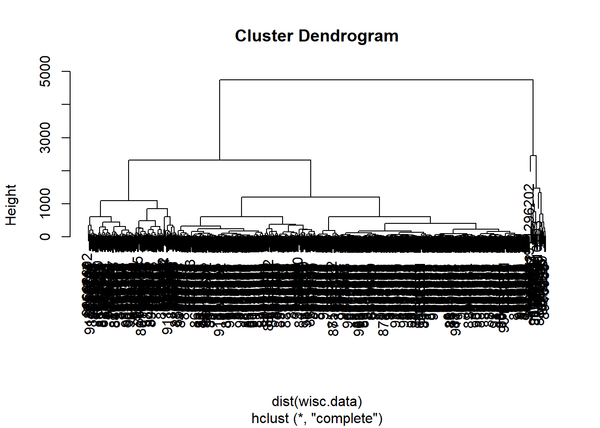

#read.csv("WisconsinCancer.csv")
wisc.df <- read.csv("WisconsinCancer.csv", row.names = 1)Class 8: Breast Cancer Mini Project
Background
This mini-project explores unsupervised learning techniques applied to the Wisconsin Breast Cancer Diagnostic Data Set, which contains measurements of human breast mass cell nuclei. The project guides the user through exploratory data analysis, performing and interpreting Principal Component Analysis (PCA) to reduce the dimensionality of the data while retaining variance, and applying hierarchical clustering with different linkage methods. It also includes an optional section on K-means clustering for comparison. The ultimate goal is to combine PCA and clustering to better separate benign and malignant cell samples, evaluating the results using metrics like sensitivity and specificity, and finally demonstrating how to predict the classification of new samples using the developed PCA model.
Data Import
Our data come from the U. of Wisconsin Medical Center
Question 1: How many patients/samples are in this dataset?
nrow(wisc.df)[1] 569Question 2: How many of the observations have a malignant diagnosis?
wisc.df$diagnosis [1] "M" "M" "M" "M" "M" "M" "M" "M" "M" "M" "M" "M" "M" "M" "M" "M" "M" "M"
[19] "M" "B" "B" "B" "M" "M" "M" "M" "M" "M" "M" "M" "M" "M" "M" "M" "M" "M"
[37] "M" "B" "M" "M" "M" "M" "M" "M" "M" "M" "B" "M" "B" "B" "B" "B" "B" "M"
[55] "M" "B" "M" "M" "B" "B" "B" "B" "M" "B" "M" "M" "B" "B" "B" "B" "M" "B"
[73] "M" "M" "B" "M" "B" "M" "M" "B" "B" "B" "M" "M" "B" "M" "M" "M" "B" "B"
[91] "B" "M" "B" "B" "M" "M" "B" "B" "B" "M" "M" "B" "B" "B" "B" "M" "B" "B"
[109] "M" "B" "B" "B" "B" "B" "B" "B" "B" "M" "M" "M" "B" "M" "M" "B" "B" "B"
[127] "M" "M" "B" "M" "B" "M" "M" "B" "M" "M" "B" "B" "M" "B" "B" "M" "B" "B"
[145] "B" "B" "M" "B" "B" "B" "B" "B" "B" "B" "B" "B" "M" "B" "B" "B" "B" "M"
[163] "M" "B" "M" "B" "B" "M" "M" "B" "B" "M" "M" "B" "B" "B" "B" "M" "B" "B"
[181] "M" "M" "M" "B" "M" "B" "M" "B" "B" "B" "M" "B" "B" "M" "M" "B" "M" "M"
[199] "M" "M" "B" "M" "M" "M" "B" "M" "B" "M" "B" "B" "M" "B" "M" "M" "M" "M"
[217] "B" "B" "M" "M" "B" "B" "B" "M" "B" "B" "B" "B" "B" "M" "M" "B" "B" "M"
[235] "B" "B" "M" "M" "B" "M" "B" "B" "B" "B" "M" "B" "B" "B" "B" "B" "M" "B"
[253] "M" "M" "M" "M" "M" "M" "M" "M" "M" "M" "M" "M" "M" "M" "B" "B" "B" "B"
[271] "B" "B" "M" "B" "M" "B" "B" "M" "B" "B" "M" "B" "M" "M" "B" "B" "B" "B"
[289] "B" "B" "B" "B" "B" "B" "B" "B" "B" "M" "B" "B" "M" "B" "M" "B" "B" "B"
[307] "B" "B" "B" "B" "B" "B" "B" "B" "B" "B" "B" "M" "B" "B" "B" "M" "B" "M"
[325] "B" "B" "B" "B" "M" "M" "M" "B" "B" "B" "B" "M" "B" "M" "B" "M" "B" "B"
[343] "B" "M" "B" "B" "B" "B" "B" "B" "B" "M" "M" "M" "B" "B" "B" "B" "B" "B"
[361] "B" "B" "B" "B" "B" "M" "M" "B" "M" "M" "M" "B" "M" "M" "B" "B" "B" "B"
[379] "B" "M" "B" "B" "B" "B" "B" "M" "B" "B" "B" "M" "B" "B" "M" "M" "B" "B"
[397] "B" "B" "B" "B" "M" "B" "B" "B" "B" "B" "B" "B" "M" "B" "B" "B" "B" "B"
[415] "M" "B" "B" "M" "B" "B" "B" "B" "B" "B" "B" "B" "B" "B" "B" "B" "M" "B"
[433] "M" "M" "B" "M" "B" "B" "B" "B" "B" "M" "B" "B" "M" "B" "M" "B" "B" "M"
[451] "B" "M" "B" "B" "B" "B" "B" "B" "B" "B" "M" "M" "B" "B" "B" "B" "B" "B"
[469] "M" "B" "B" "B" "B" "B" "B" "B" "B" "B" "B" "M" "B" "B" "B" "B" "B" "B"
[487] "B" "M" "B" "M" "B" "B" "M" "B" "B" "B" "B" "B" "M" "M" "B" "M" "B" "M"
[505] "B" "B" "B" "B" "B" "M" "B" "B" "M" "B" "M" "B" "M" "M" "B" "B" "B" "M"
[523] "B" "B" "B" "B" "B" "B" "B" "B" "B" "B" "B" "M" "B" "M" "M" "B" "B" "B"
[541] "B" "B" "B" "B" "B" "B" "B" "B" "B" "B" "B" "B" "B" "B" "B" "B" "B" "B"
[559] "B" "B" "B" "B" "M" "M" "M" "M" "M" "M" "B"table(wisc.df$diagnosis)
B M
357 212 sum(wisc.df$diagnosis == "M")[1] 212colnames(wisc.df) [1] "diagnosis" "radius_mean"
[3] "texture_mean" "perimeter_mean"
[5] "area_mean" "smoothness_mean"
[7] "compactness_mean" "concavity_mean"
[9] "concave.points_mean" "symmetry_mean"
[11] "fractal_dimension_mean" "radius_se"
[13] "texture_se" "perimeter_se"
[15] "area_se" "smoothness_se"
[17] "compactness_se" "concavity_se"
[19] "concave.points_se" "symmetry_se"
[21] "fractal_dimension_se" "radius_worst"
[23] "texture_worst" "perimeter_worst"
[25] "area_worst" "smoothness_worst"
[27] "compactness_worst" "concavity_worst"
[29] "concave.points_worst" "symmetry_worst"
[31] "fractal_dimension_worst"Question 3: How many variables/features in the data are suffixed with _mean?
(grep("mean", colnames(wisc.df), value = T)) [1] "radius_mean" "texture_mean" "perimeter_mean"
[4] "area_mean" "smoothness_mean" "compactness_mean"
[7] "concavity_mean" "concave.points_mean" "symmetry_mean"
[10] "fractal_dimension_mean"There is a diagnosis column that is the clinician consensus that I want to exclude from any further analysis. We will come back later and compare our results to this diagnosis.
diagnosis <- as.factor(wisc.df$diagnosis)
head(diagnosis)[1] M M M M M M
Levels: B MNow we can remove it from the wisc.df
wisc.data <- wisc.df[,-1]Clustering
Let’s try a hclust()
hc <- hclust(dist(wisc.data))
plot(hc)
We can extract clusters from this rather poor dendrogram/tree with the cutree()
grps <- cutree(hc, k=2)How many individuals in each cluster?
table(grps)grps
1 2
549 20 table(diagnosis)diagnosis
B M
357 212 We can generate a cross-table that compares our cluster grps vector with our diagnosis vector values
table(diagnosis, grps) grps
diagnosis 1 2
B 357 0
M 192 20Principal Component Analysis
The importance of data scalling
The main function for PCA in base R is prcomp() it has a default input parameter of scale=FALSE.
#prcomp()
head(mtcars) mpg cyl disp hp drat wt qsec vs am gear carb
Mazda RX4 21.0 6 160 110 3.90 2.620 16.46 0 1 4 4
Mazda RX4 Wag 21.0 6 160 110 3.90 2.875 17.02 0 1 4 4
Datsun 710 22.8 4 108 93 3.85 2.320 18.61 1 1 4 1
Hornet 4 Drive 21.4 6 258 110 3.08 3.215 19.44 1 0 3 1
Hornet Sportabout 18.7 8 360 175 3.15 3.440 17.02 0 0 3 2
Valiant 18.1 6 225 105 2.76 3.460 20.22 1 0 3 1We coudl do a PCA of this data as is and it could be mis-leading…
pc <- prcomp(mtcars)
biplot(pc)Let’s look at the mean values of each column and their standard deviation.
colMeans(mtcars) mpg cyl disp hp drat wt qsec
20.090625 6.187500 230.721875 146.687500 3.596563 3.217250 17.848750
vs am gear carb
0.437500 0.406250 3.687500 2.812500 apply(mtcars, 2, sd) mpg cyl disp hp drat wt
6.0269481 1.7859216 123.9386938 68.5628685 0.5346787 0.9784574
qsec vs am gear carb
1.7869432 0.5040161 0.4989909 0.7378041 1.6152000 We can “scale” this data before PCA to get a much better representation and analysis of all the columns
mtscale <- scale(mtcars)round(colMeans(mtscale)) mpg cyl disp hp drat wt qsec vs am gear carb
0 0 0 0 0 0 0 0 0 0 0 apply(mtscale, 2, sd) mpg cyl disp hp drat wt qsec vs am gear carb
1 1 1 1 1 1 1 1 1 1 1 pc.scale <- prcomp(mtscale)We can look at the two main results figures from PCA - the “PC plot” (a.k.a. score plot, ordienation plot, or PC1 vs PC2 plot). The “loadings plot” how the original variables contribute to the new PCs
A loadings plot of the unscalled PCA results
library(ggplot2)
ggplot(pc$rotation) +
aes(PC1, rownames(pc$rotation)) +
geom_col()ggplot(pc.scale$rotation) +
aes(PC1, rownames(pc$rotation)) +
geom_col()
PC plot of scaled PCA results
library(ggrepel)Warning: package 'ggrepel' was built under R version 4.3.3ggplot(pc.scale$x) +
aes(PC1, PC2, label=rownames(pc.scale$x)) +
geom_point() +
geom_text()Key point: In general we will set
scale=TRUEwehn we do PCA. This is not the default but probably should be…
We can check the SD and mean of the different columns in wisc.data to see if we need to scale - hint: we do!
PCA of wisc.data
wisc.pr <- prcomp(wisc.data, scale=T)To see how well PCA is doing here in terms capturing the variance (or spread) in the data we can use the summary() function.
summary(wisc.pr)Importance of components:
PC1 PC2 PC3 PC4 PC5 PC6 PC7
Standard deviation 3.6444 2.3857 1.67867 1.40735 1.28403 1.09880 0.82172
Proportion of Variance 0.4427 0.1897 0.09393 0.06602 0.05496 0.04025 0.02251
Cumulative Proportion 0.4427 0.6324 0.72636 0.79239 0.84734 0.88759 0.91010
PC8 PC9 PC10 PC11 PC12 PC13 PC14
Standard deviation 0.69037 0.6457 0.59219 0.5421 0.51104 0.49128 0.39624
Proportion of Variance 0.01589 0.0139 0.01169 0.0098 0.00871 0.00805 0.00523
Cumulative Proportion 0.92598 0.9399 0.95157 0.9614 0.97007 0.97812 0.98335
PC15 PC16 PC17 PC18 PC19 PC20 PC21
Standard deviation 0.30681 0.28260 0.24372 0.22939 0.22244 0.17652 0.1731
Proportion of Variance 0.00314 0.00266 0.00198 0.00175 0.00165 0.00104 0.0010
Cumulative Proportion 0.98649 0.98915 0.99113 0.99288 0.99453 0.99557 0.9966
PC22 PC23 PC24 PC25 PC26 PC27 PC28
Standard deviation 0.16565 0.15602 0.1344 0.12442 0.09043 0.08307 0.03987
Proportion of Variance 0.00091 0.00081 0.0006 0.00052 0.00027 0.00023 0.00005
Cumulative Proportion 0.99749 0.99830 0.9989 0.99942 0.99969 0.99992 0.99997
PC29 PC30
Standard deviation 0.02736 0.01153
Proportion of Variance 0.00002 0.00000
Cumulative Proportion 1.00000 1.00000Question 4: From your results, what proportion of the original variance is captured by the first principal components (PC1)
44.27%
Question 5: How many principal components (PCs) are required to describe at least 70% of the original variance in the data?
3
Question 6:How many principal components (PCs) are required to describe at least 90% of the original variance in the data?
7
biplot(wisc.pr)
Question 7: What stands out to you about this plot? Is it easy or difficult to understand? Why?
What stands out is the main cluster of data in the middle of the plot, which makes it extremely difficult to understand due to the close proximity of the data points to one another.
plot(wisc.pr$x, col = diagnosis, xlab = "PC1", ylab = "PC2")
Question 8: Generate a similar plot for principal components 1 and 3. What do you notice about these plots?
These plots very similar in their data points but the plot for PC1 and PC3 has better grouping compared to the first plot where there is less intermingling of benign and malignant data points.
plot(wisc.pr$x[,-2], col=diagnosis, xlab = "PC1", ylab = "PC3")
Let’s make the main PC1 vs PC2
ggplot(wisc.pr$x) +
aes(PC1, PC2, col=diagnosis) +
geom_point() +
xlab("PC1 (44.3%)") +
ylab("PC2 (19%)")pr.var <- wisc.pr$sdev^2
head(pr.var)[1] 13.281608 5.691355 2.817949 1.980640 1.648731 1.207357pve <- pr.var/30
plot(pve, xlab="Principal Component",
ylab = "Proportion of Variance Explained",
ylim = c(0,1), type="o")
#install.packages("factoextra")
library(factoextra)Warning: package 'factoextra' was built under R version 4.3.3Welcome! Want to learn more? See two factoextra-related books at https://goo.gl/ve3WBafviz_eig(wisc.pr, addlabels = TRUE)
Question 9: For the first principal component, what is the component of the loading vector for the feature
concave.points_mean?
wisc.pr$rotation[,1] radius_mean texture_mean perimeter_mean
-0.21890244 -0.10372458 -0.22753729
area_mean smoothness_mean compactness_mean
-0.22099499 -0.14258969 -0.23928535
concavity_mean concave.points_mean symmetry_mean
-0.25840048 -0.26085376 -0.13816696
fractal_dimension_mean radius_se texture_se
-0.06436335 -0.20597878 -0.01742803
perimeter_se area_se smoothness_se
-0.21132592 -0.20286964 -0.01453145
compactness_se concavity_se concave.points_se
-0.17039345 -0.15358979 -0.18341740
symmetry_se fractal_dimension_se radius_worst
-0.04249842 -0.10256832 -0.22799663
texture_worst perimeter_worst area_worst
-0.10446933 -0.23663968 -0.22487053
smoothness_worst compactness_worst concavity_worst
-0.12795256 -0.21009588 -0.22876753
concave.points_worst symmetry_worst fractal_dimension_worst
-0.25088597 -0.12290456 -0.13178394 -0.26
Question 10: Using the plot() and abline() functions, what is the height at which the clustering model has 4 clusters?
data.scaled <- scale(wisc.data)data.dist <- dist(data.scaled)wisc.hclust <- hclust(data.dist, method = "complete")plot(wisc.hclust)
abline(h = 19, col="red", lty=2)
At height 19 the clustering model has 4 clusters.
Question 12: Which method gives your favorite results for the same data.dist dataset?
The method = “complete” gives our favorite results because it is sensitive to noise in the data set and can help create compact clusters.
5. Combining methods
We can take our PCA results and use them as a basis set for other analysis such as clustering.
Clustering on PCA results
wisc.pr.hclust <- hclust( dist(wisc.pr$x[,1:2]), method = "ward.D2" )
plot(wisc.pr.hclust)
We can “cut” this tree to yield our clusters (groups):
pc.grps <- cutree(wisc.pr.hclust, k=2)
table(pc.grps)pc.grps
1 2
195 374 How do my cluster groups compare to the expert diagnosis
table(diagnosis, pc.grps) pc.grps
diagnosis 1 2
B 18 339
M 177 35table(diagnosis)diagnosis
B M
357 212 Question 13: How well does the newly created model with four clusters seperate out the two diagnoses?
The newly created model with four clusters separates out the two diagnoses very clearly and makes a more easy to read dendrogram with the same amount of information.
Qustion 14: How well do the hierarchical clustering models you created in previous sections do in terms of separitng the diagnoses? Again, use the table() function to compare the output of each model with the vector containing the actual diagrams
They did really baddly. We do much better after PCA - the new PCA variables (what we call a basis set) give us much better seperation of M and B
7. Prediction
we can use our PCA model for the analysis of new “unseen” data. In this case from U. Mich.
#url <- "new_samples.csv"
url <- "https://tinyurl.com/new-samples-CSV"
new <- read.csv(url)
npc <- predict(wisc.pr, newdata=new)
npc PC1 PC2 PC3 PC4 PC5 PC6 PC7
[1,] 2.576616 -3.135913 1.3990492 -0.7631950 2.781648 -0.8150185 -0.3959098
[2,] -4.754928 -3.009033 -0.1660946 -0.6052952 -1.140698 -1.2189945 0.8193031
PC8 PC9 PC10 PC11 PC12 PC13 PC14
[1,] -0.2307350 0.1029569 -0.9272861 0.3411457 0.375921 0.1610764 1.187882
[2,] -0.3307423 0.5281896 -0.4855301 0.7173233 -1.185917 0.5893856 0.303029
PC15 PC16 PC17 PC18 PC19 PC20
[1,] 0.3216974 -0.1743616 -0.07875393 -0.11207028 -0.08802955 -0.2495216
[2,] 0.1299153 0.1448061 -0.40509706 0.06565549 0.25591230 -0.4289500
PC21 PC22 PC23 PC24 PC25 PC26
[1,] 0.1228233 0.09358453 0.08347651 0.1223396 0.02124121 0.078884581
[2,] -0.1224776 0.01732146 0.06316631 -0.2338618 -0.20755948 -0.009833238
PC27 PC28 PC29 PC30
[1,] 0.220199544 -0.02946023 -0.015620933 0.005269029
[2,] -0.001134152 0.09638361 0.002795349 -0.019015820plot(wisc.pr$x[,1:2], col=diagnosis)
points(npc[,1], npc[,2], col="blue", pch=16, cex=3)
text(npc[,1], npc[,2], c(1,2), col="white")
QUESTION 16: Which of these new patients should we prioritize for follow up based on your results?
PATIENT 2